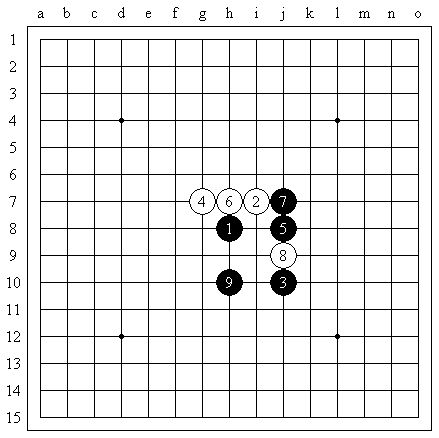
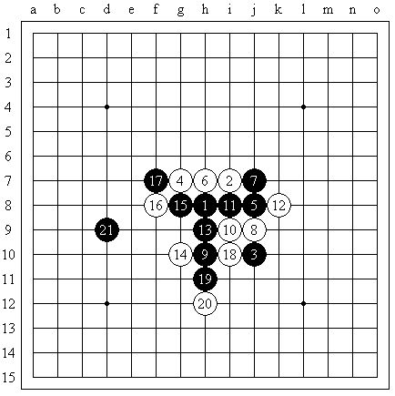
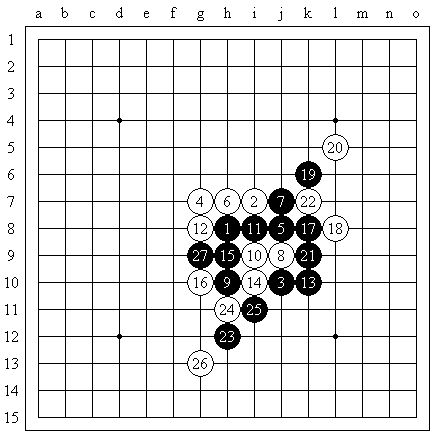
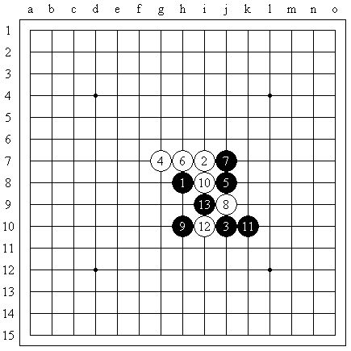
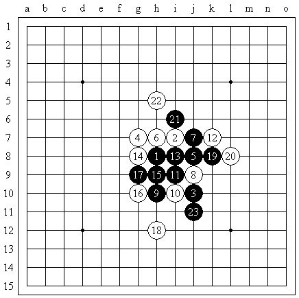
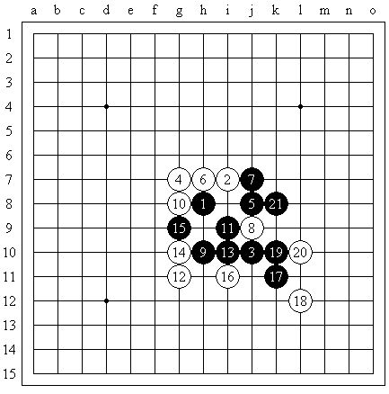

【茗弈】授课内容(五)09全国赛妙手个人对局分析（对手汪清清)
#1 【茗弈】授课内容(五)09全国赛妙手个人对局分析（对手汪清清) 作者：举步回眸浅浅笑 发表时间：2009-10-27 11:19:55
这是09全国赛第2轮我的一盘对局。本盘由我开局，对阵四川棋手汪清清。对手是今年的少女赛冠军，有一定计算实力，但弱点是学棋时间尚短。针对对手的特点，我准备采用“考”的战术。

我开出流星，对手不换，并给出最常见的4。五手两打中5A点为j7。局面行至第9手时，对手开始犹豫——我觉得我的计划很可能成功了。
这个局面是一路老变化。对于学棋比较长的棋手来说，这个局面一般都是很熟悉的。然而，老定式往往难住新棋手。我正是考虑到汪清清学棋时间比较短，才决定用这个局面考她一考。
如图，这个局面很有些意思——整个盘面i9点是唯一，其他点黑皆有地毯杀。赛前，经过我的一些实践，我发现，不会这路变化的选手，单纯用局面分析，往往并不喜欢走i9。因此，对手一犹豫，我就觉得我有80%的可能谱杀掉这局了。
我们先来看一下白棋的正确应法：

如图，白10走出唯一之后，黑11手很自然地活三，白12必须挡活三于右端。之后，黑白双方不断交换，至21手，定式阶段结束。此局面白棋好下。
如果白12挡活三于左端，会有什么后果呢？

如图，黑方自13手开始不断进攻，至27手，黑形成胜势，白方无解。
再看另外几个常见败点：
a、

白10活三，意欲强攻，然而黑方11手可以形成反三。13手之后，黑胜势明显，白无法抵挡（如果白10选择g6跳三，道理相似，不赘述）。
b、

如果白10落在i10上，黑之后的必胜法还是蛮复杂的。如图，自11手至18手，白棋采用的皆是最强防。18手之后，黑棋竟然有了点“堵”的感觉。如果黑不能成功杀掉白方，白将形成可怕的外势。那么，黑到底存不存在必胜呢？
如上图，黑19先在k8冲四，之后21手于i6活三。此时，白22防在上端为最强。然后，便是最有意思的一手——23手。
从常规棋感来看，23手确实蛮怪——这一手的确不大符合人们的棋形感。然而，仔细分析之后，却会发现黑棋蕴藏着相当强大的后续手段。至此，黑方只须根据白24手的位置“见风使舵”，当不难取胜。

再回到实战。经过一段时间的犹豫之后，汪清清在g8点给出10手。这一手当然是黑必胜，然而我却对这个10不熟悉。但是，毕竟是在知道必胜的前提下算杀，难度减小了不少。经过简短的分析，我定下了依次于i9、i10活三的初步策略。当然，由于本盘对局的背景是实战比赛，我还是谨慎一点的好。于是，我又大略算了后面的一些变化：比如16手防于i11、k11、k10等等（当然，白12、14采用的是反跳四最强防）。几分钟之后，我计算清楚，遂依计划落下11、13手，对手也如我所料走出最强12、14。对手的16手在我的计算范围之内，我便依之前的计算不断进攻。至21手，对手投子。
虽然本盘对局的质量比较有限（毕竟是“考”棋+半谱杀），不过，我对自己的战术运用，还是比较满意的。很多时候，比赛比得不止是硬实力，还要看战术、战略是否运用得当。就在本年5月进行的山东赛上，我对陈子豪就用了这个变化。然而，对手是名学棋5年左右的较老棋手了——用老变化考老棋手，当然就比较容易落空了。所以说，除了硬实力、硬功夫之外，根据不同的对手制定不同的战术，也是一项非常重要的比赛技能、
［ 雅典娜 于 2009-10-27 15:24:14 时花20金币送鲜花一朵］
［ 有志青年 于 2009-10-27 18:30:19 时奖励此帖[金币加 20 威望加1］
［ 梦醉南天 于 2009-11-1 17:18:35 时花20金币送鲜花一朵］
#2 Re:【茗弈】授课内容(五)09全国赛妙手个人对局分析（对手汪清清) 作者：雅典娜 发表时间：2009-10-27 15:23:53
宝贝辛苦了!